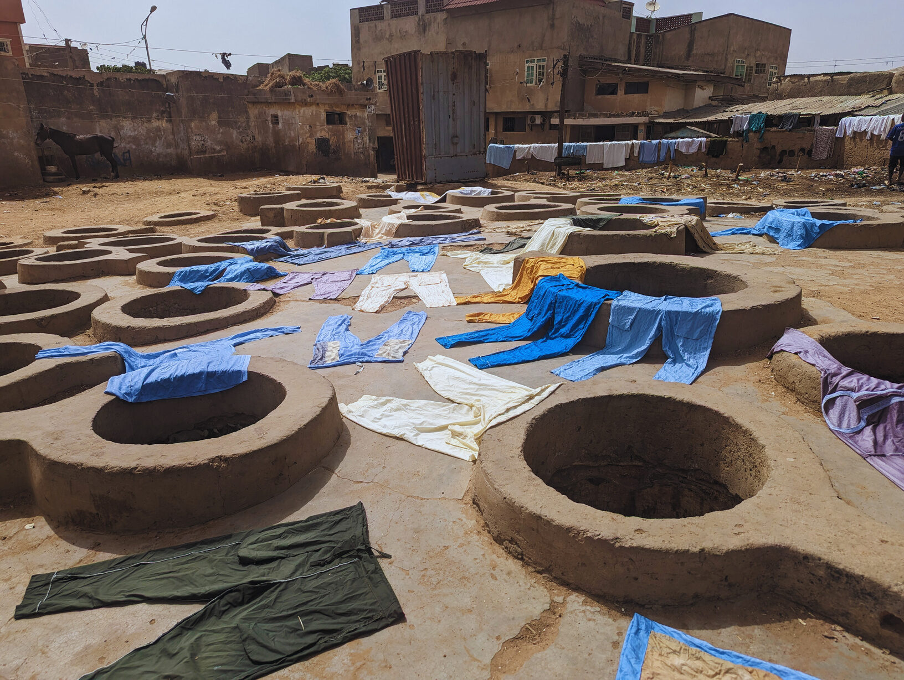

A Ghanaian-Scottish spatial practitioner, researcher and creative producer committed to shaping inclusive and just African cities through culture, craft and community. Her work explores creative lifeworlds, mobility and participatory urbanism across West Africa.
At Ɛdan, our friends are our family — we wouldn't be where we are today without them, and they are integral to our future. The community has built the city, and our community keeps us warm; nothing can be done alone.
Ɛdan's journey to this point has been long and layered. This is its third home, and we hope, for now at least, our last. Much of that journey has been shaped by the realities of Accra's rental market — rent paid but doors never opened, agreements signed without authority, promises that dissolve. Each experience could have been discouraging, and at moments was. Yet they only deepened the conviction in the necessity of Ɛdan: a space that does not have to be negotiated each time, that holds itself together long enough for the work to begin.
The home we are now custodians of is hidden from plain sight. Once a family house passed through generations, it later became a dental practice — still within the family, a place that always held care at its core. The house carries peculiarities that suited the family who built it: a first floor accessible only through an outside but internal staircase, and a ground floor with two separate entrances that bear no relationship to one another. These are not quirks to be corrected. They are records of how the household once moved — the plan is the family's biography, written in walls.
When we started the project, removing the exterior cladding of the larger structure revealed that, sadly, it had come to the end of its life. After the shock and disappointment, this offered an opportunity to build towards something new with an ode to the past — a physical form letter to a brighter, more stable future, one that had learned all the lessons of its predecessor.
It was the garden that truly convinced us. Even unattended, it continues to give — plentiful plantain, bananas, noni fruit and wildflowers. It has always felt like home, held by a community we were yet to know. Nyaniba, where we now live as an urban lab, is a Ga community named after Elizabeth Nyaniba, mother of Kwame Nkrumah — a formidable trader and fishmonger whose labour and legacy embody the spirit of women's economic power. In many ways, Ɛdan continues that legacy: at our centre, the vision of women, their creativity, care and quiet endurance as the foundation upon which communities grow.


The guesthouse funds the lab.
The lab feeds the community.
The community shapes the city.
And the city comes back to Ɛdan.
A place to stay. A place to make. A place to return to.
Stay here → become part of the loop.